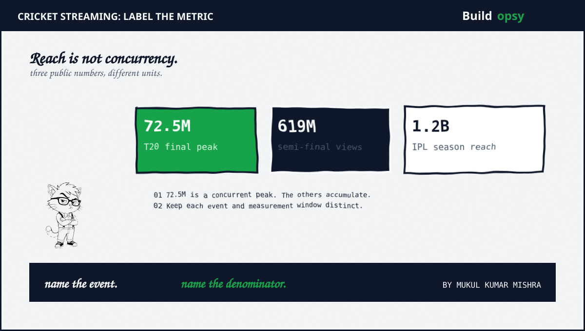
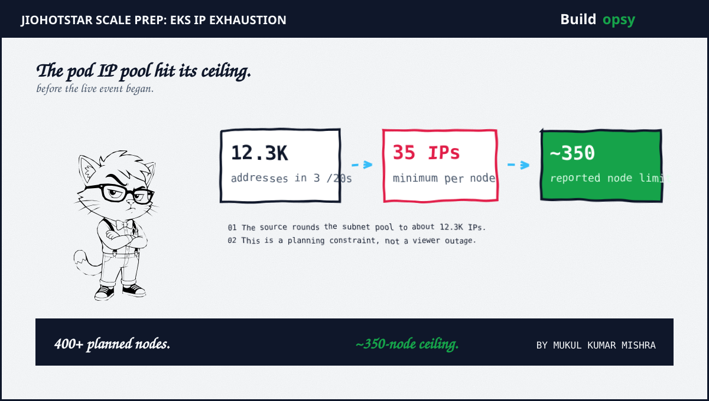
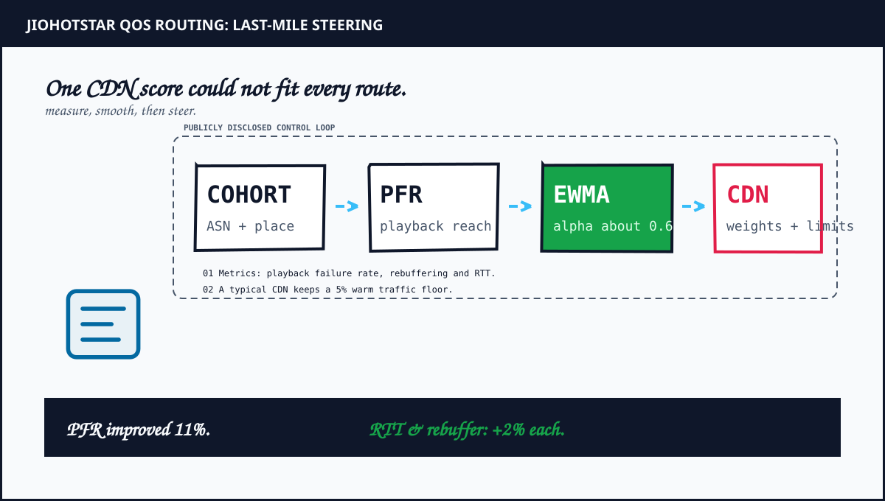

1. First, Separate the Audience Metrics
Large cricket numbers are easy to flatten into one word: viewers. That hides the most important distinction. Concurrent streams count people watching at the same time. Digital views count starts or plays under a platform's reporting definition. Reach may combine people across a full tournament, across television and digital. They answer different questions.
| Reported number | What it measures | Event | Source |
|---|---|---|---|
| 72.5 million | Peak concurrent streams | ICC Men's T20 World Cup final, 2026 | Reliance FY26 annual report |
| 65.2 million | Peak concurrent viewers | India–England semi-final, March 5, 2026 | ICC media release |
| 619 million | Digital views | The same semi-final | ICC media release |
| 1.2 billion | Season reach across TV and digital | IPL 2026 | JioStar press release |
The first two figures are peaks from different matches. The third is a count of digital views. The fourth is reach accumulated across a season and across screens. None says that 12 or 20 crore people were watching one match simultaneously. For capacity planning, the 72.5 million peak is the relevant concurrency figure in the sources reviewed here.

2. The Capacity Incident Happened Before the Match
Disney+ Hotstar's 2024 engineering retrospective describes the preparation for the 2023 Asia Cup and World Cup. The team had previously managed about 25 million concurrent streams across two Kubernetes clusters. A new mobile offering increased the scale they needed to plan for, so the engineers modeled capacity near 50 million concurrent streams on a newer architecture.
A 2019 Hotstar engineering post described the shift from manually stepped capacity ladders to Kubernetes plus a custom autoscaler. The company reported twice the concurrency with one tenth of its earlier compute. That comparison came from its own workload, not a ratio another platform can copy. It shows the 2023 IP issue arose inside a capacity strategy already evolving toward workload-aware scaling.
The first constraint was not a video codec or a CDN price. During cluster creation, the team hit a shortage of pod IP addresses. Their report says the environment needed more than 400 worker nodes but could not scale beyond roughly 350. The issue was caught while cluster creation was beginning. The source says the team added subnet capacity and adjusted CNI allocation before major disruption.
The IP shortage was fixed during cluster setup. The source does not report an outage during the later 72.5 million-viewer final or say that the same cluster served it.
The same 2024 post opens by describing a later 59 million concurrent-stream peak. It also details separate work on CDN API segregation, NAT gateway scaling, worker-node throughput and phased cluster scaling. That overall peak should not be attributed to the IP-pool fix alone.
3. The IP Arithmetic Behind the Ceiling
The report describes three /20 subnets. A /20 contains 4,096 IPv4 addresses before AWS reservations. Hotstar rounded the usable pool to about 4,090 addresses per subnet, or roughly 12,300 across the three subnets.
The VPC CNI settings included a MINIMUM_IP_TARGET of 35 and a WARM_IP_TARGET of 10. The first value sets a floor for IP allocation per node. The second maintains a pool of unassigned IPs for pod placement. Warm addresses improve assignment speed, but they still consume subnet space.
A back-of-envelope check divides 12,300 addresses by the 35-IP minimum, giving about 351 node-equivalents before other reservations. The 10-IP warm target plus primary ENIs, host workloads and subnet reservations can reduce practical capacity. This is not a full EKS max-pods calculation. Hotstar reported that its cluster stopped near 350 nodes.
The team added larger /19 subnets, which it reported increased the pool to about 48,000 addresses. It later lowered MINIMUM_IP_TARGET to 20 and WARM_IP_TARGET to 5. Hotstar reported about 40 percent IP utilization during the World Cup. The important move was to treat subnet address space as a planned capacity resource, not as leftover configuration.
| Preparation state | Reported value | Operational meaning |
|---|---|---|
| Initial pool | 3 × /20, about 12.3K usable IPs | Finite pod-address budget |
| Initial CNI floor | 35 minimum IPs per node | Roughly 350 node-equivalents from the pool |
| Planned cluster | 400+ worker nodes | Required more address headroom |
| Revised pool | About 48K IPs | More subnet room for the event plan |
| Later CNI targets | 20 minimum plus 5 warm IPs | Less unused reservation |

4. A Legacy Endpoint Limit Added a Second Boundary
The same retrospective describes a separate service-discovery limit. Some services needed more than 1,000 pods. The legacy Kubernetes Endpoints resource truncates its address list above 1,000 entries. Kubernetes now recommends the EndpointSlice API for scalable endpoint discovery. Hotstar said its API Gateway did not support EndpointSlices at the time, so the team identified high-pod-count services and kept those services below the legacy limit through vertical scaling.
This was a compatibility boundary, not a general Kubernetes pod limit. EndpointSlices can represent larger endpoint sets. The constraint existed because a component in the request path still depended on the older API.
5. The CDN Was Also an API Gateway
Hotstar's 2024 post explains that its CDNs also served as the external API gateway. They handled cacheable and non-cacheable API requests plus security and routing work. Under event traffic, that request processing consumed edge compute. The team grouped APIs by behavior and moved cacheable paths to a separately configured CDN domain, reducing unnecessary work in the critical path.
The same post describes network bottlenecks in NAT Gateways and worker nodes. One cluster used half its NAT network throughput at roughly one tenth of expected peak traffic. Some services used 8 to 9 Gbps on worker nodes. Hotstar introduced higher-throughput nodes and topology-spread constraints for its internal gateway pods, which brought per-node traffic into the 2 to 3 Gbps range in its tests.
Those findings are specific to the reported architecture. They do not prove that every streaming platform should put its API gateway on a CDN or use the same node topology. The transferable method is to test every layer at realistic user-journey load before choosing a scaling lever.

6. Quality-of-Service Routing Became a Feedback Loop
In a 2026 engineering post, JioHotstar describes a QoS Routing Manager that selects CDN traffic weights for a granular cohort. The cohort combines autonomous system number, country, state, city and user type. That can distinguish a poor last-mile route in one city from healthy service elsewhere on the same provider.
The service scores Playback Failure Rate, rebuffering and Round-Trip Time. The article says it smooths noisy telemetry with an Exponentially Weighted Moving Average using an alpha near 0.6. Its two-phase capacity steering throttles a CDN approaching its utilization threshold, then aims to exhaust available CDN capacity more uniformly once the threshold is crossed. A healthy CDN keeps a minimum traffic share (typically 5 percent) to remain ready for failover. Hard network constraints prevent routing a cohort to a CDN that cannot serve it.
JioHotstar reports an A/B rollout on ASN-State cohorts during a T20 match. The treatment group saw an 11 percent improvement in Playback Failure Rate, while rebuffering and RTT latency each improved by 2 percent. These are company-reported results for that experiment, not universal gains or a measurement of the later 72.5 million-viewer final.
The architecture lesson is that global CDN health is not enough. Routing needs a local view of playback quality plus a controller that changes weights slowly enough to avoid creating new oscillations.
7. Capacity Math Without Pretending to Know the Private Bill
The simplest live-video capacity estimate starts with a deliberately narrow formula:
The 72.5 million figure is peak concurrency, not an hour-long average. The sources do not give the bitrate mix, cache-hit ratio or CDN prices needed to calculate bandwidth. JioHotstar's separate 60–80 Tbps figure comes from another live-event post, not a measurement of this final.
For your own architecture, vary concurrent viewers and bitrate in the Cloud Egress Cost Calculator and CDN Cost Calculator. Use your region, cache behavior and negotiated rates. Do not treat a public list price as JioHotstar's invoice.
| Assumed average bitrate | Payload bandwidth at 72.5M streams | Status |
|---|---|---|
| 1 Mbps | 72.5 Tbps | Illustrative scenario |
| 2 Mbps | 145 Tbps | Illustrative scenario |
| 4 Mbps | 290 Tbps | Illustrative scenario |
8. What a Smaller Team Can Reuse
Do not copy 72.5 million as a scaling target. The useful work is the sequence of constraints:
- Build an address budget from expected nodes and CNI pool settings before raising pod density.
- Load-test API control paths as well as video delivery. Cacheable scorecards and non-cacheable session operations have different behavior.
- Measure CDN quality by viewer network cohort when a single country-wide score hides local congestion.
- Keep EndpointSlice support in the service-discovery plan. A legacy Endpoints dependency has a documented 1,000-address ceiling.
- Define a safe degradation mode before kickoff. JioHotstar's earlier scaling post describes a deliberate sequence for jettisoning non-critical features while protecting playback.
The calculation is useful only when it has an owner. Add a dashboard for free subnet addresses, node IP reservations, API gateway throughput, PFR, rebuffering and RTT. Run the test before event day. If the fallback is a spreadsheet plus an on-call engineer, document who acts and what gets switched off.
Review Kubernetes in Production for cluster and workload scaling, then SRE and Observability in Production for service-level signals and alert design.
9. The Verdict
The headline record is the easy part. The engineering story is a set of narrower constraints: pod addresses, gateway compute, endpoint discovery and network quality that varies by cohort. Hotstar's public write-ups show the team discovering these ceilings before or during scale preparation, then changing subnet capacity, CNI targets, gateway placement and CDN steering.
The reusable lesson is narrower and stronger than “add more servers.” Model the address pool. Measure player outcomes by network cohort. Keep failover paths warm. Then test what happens when the event begins before the dashboard looks calm.
A live-stream peak is a number. Capacity is every boundary beneath it.
Sources and Method
The EKS IP issue, CNI settings, gateway topology and NAT findings come from Disney+ Hotstar's engineering retrospective. The QoS Routing Manager results come from JioHotstar's own engineering post. Audience metrics come from Reliance, JioStar and ICC releases. The bandwidth table is our scenario math, not a JioHotstar disclosure. Brand names reflect the sources' dates.
- Disney+ Hotstar Engineering: Scaling Infrastructure for Millions, Part 1
- Hotstar Engineering: Scaling the Hotstar Platform for 50M
- JioHotstar Engineering: Orchestrating JioHotstar Traffic with the QoS Routing Manager
- Reliance Industries FY 2025–26 Annual Report: Media and Entertainment
- ICC: India–England T20 World Cup semi-final streaming record
- JioStar: TATA IPL 2026 reach and watch-time announcement
- Kubernetes documentation: over-capacity Endpoints and EndpointSlices
- AWS EKS Best Practices: Amazon VPC CNI IP targets
- AWS VPC documentation: subnet address reservations